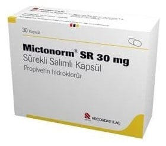

Mictonorm SR 30 mg Sürekli Salımlı Kapsül

Ne için kullanılır
KT · Bölüm 1MICTONORM SR, beyaz ya da beyazımsı pelletler içeren, turuncu ve beyaz renkte, sürekli salımlı sert kapsüldür. Etkisinin gün boyu sürebilmesi için özel olarak tasarlanmıştır. Etkin madde olarak idrar kesesinin kasılmasını azaltıcı etki gösteren propiverin hidroklorür içerir. MICTONORM SR, 30 kapsül içeren blister ambalajda, hasta kullanma talimatını da içeren karton kutuda kullanıma sunulmaktadır. MICTONORM SR, idrar kesesinin aşırı çalışmasından kaynaklanan idrar kesesi kontrol güçlüğü çeken kişilerin tedavisinde kullanılmaktadır. Etkin madde olarak üriner antispazmodik ilaç grubundan, propiverin hidroklorür içerir. Vücudunuzda idrarınızın toplandığı idrar kesesinin kasılıp daralmasını engeller ve böylece idrar kesesinin taşıyabileceği miktarı artırır. Ayrıca, aşırı çalışan idrar kesesi belirtilerinin tedavisinde de kullanılır. Günde bir kez alınması gereken sürekli salımlı bir kapsüldür.